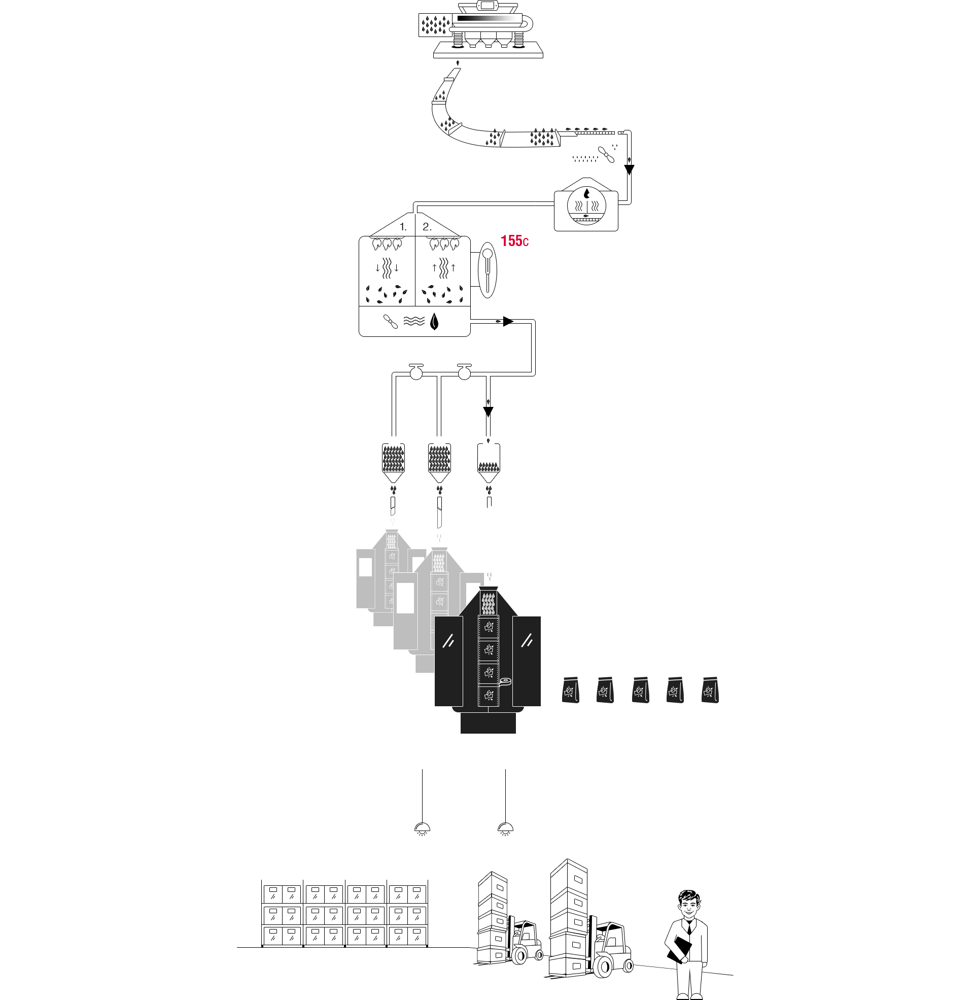
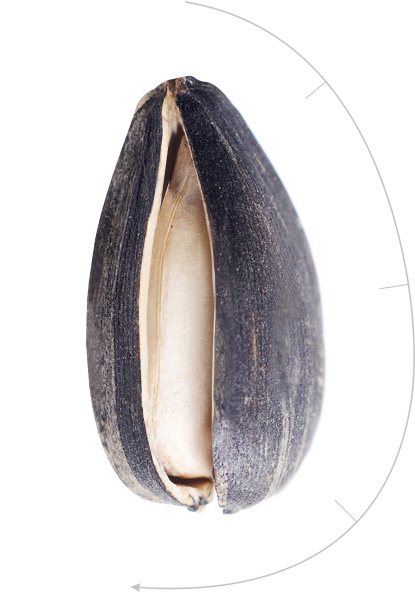

-
Голосуем за место проведения НОВОГОДНЕГО КОРПОРАТИВА
-
Церемония награждения РАБОТНИК ГОДА состоялась

-
Церемония награждения РАБОТНИК ГОДА состоялась

Подробнее
Как производят вкусные семечки в 2016 году?
01Калибровка:
02Подача на жарочную линию
03Вибросито
04Мойка
05Обжарка воздухом
06Порционное деление в мультиголовках:
07Фасовка:
08Складирование:
09Доставка довольным покупателям:
это и многое другое в разделе
В настоящее время Компания является лидером на рынке данного направления в Сибирском федеральном округе (СФО).
Продукт «Зум-Зум» 240 г. занимает первое место в СФО по объемам продаж (в денежном эквиваленте). За последний год серьёзно усилились позиции бренда «Зум-Зум» на территории Уральского и Приволжского федеральных округов.
География продаж
-
Выберите регион:
-
Выберите город:
Польза семечек
Нервы отдыхают или защита от стресса.
А еще семечки можно назвать «домашним психологом», ведь содержащиеся в них витамины группы В и фолиевая кислота помогают справиться со стрессом и перепадами настроения.
 Ученые доказали, что во время лущения семян подсолнечника включается работа мелкой моторики, а мозг в это время отдыхает ;)
Ученые доказали, что во время лущения семян подсолнечника включается работа мелкой моторики, а мозг в это время отдыхает ;)
Дружная семейка!
Вы когда-нибудь замечали, что поедание семечек сближает? Стоит одному члену семьи начать лущить семечки, как постепенно к нему присоединяются все домочадцы)) Аромат жареных семян подсолнечника и звонкий хруст притягивают, как магнитом. И вот незаметно для всех пачка опустела… Что-ж….Пора идти за новой!
А можно поддержать это мероприятие игрой в настольные игры, а проигравший будет тянуть жребий для похода в магазин))
Помогают бросить курить!
Многие хотят бросить курить и не делают это только потому, что им не хочется «выпадать» из дружной компании коллег, которые в «курилке» обсуждают самые свежие новости, а еще потому, что привыкли держать в руке сигарету. Семечки помогут избавиться от пагубной привычки: берите их с собой и общайтесь с коллегами! Конечно, все эти полезные вещества есть и в других продуктах, но в семечках они сохраняются намного дольше, ведь скорлупа защищает ядра от вредных воздействий окружающей среды, особенно если семечка деликатно обжаривается воздухом.